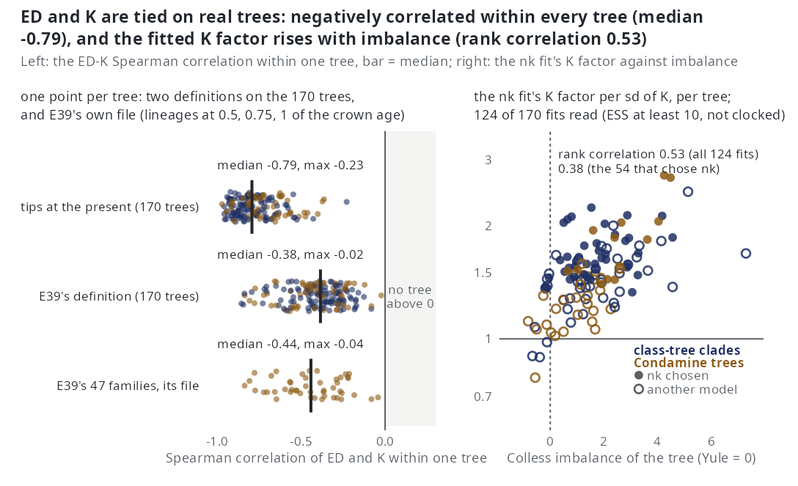

K: the number of ancestral splits
In one line. \(K_s(t)\) counts the speciation events on the path from the crown to lineage \(s\), hidden ones included, and its coefficient asks whether a lineage from a speciation-rich ancestry splits sooner: the heritability of diversification rate.
\(K\) is a lineage-level covariate that reads the topology of a lineage's ancestry and none of its branch lengths. It is fitted alone in k and beside N in nk. On simulated trees it is the one covariate the others do not span; on real trees, which are less balanced, it ranks lineages in partly the same order as ED. The covariates page compares the four.
The question in the literature
If the rate at which a lineage splits is set by traits that pass to its daughters, a lineage whose ancestors split often had ancestors with a high rate, and is likely to split often itself. Savolainen et al. (2002) tested this with the correlation between ancestral and descendant branch lengths in large sequence-based trees of plants, insects, fungi and bacteria, and found a pattern consistent with heritable cladogenesis in most clades. The idea has a longer history as the mechanism behind tree imbalance: Kirkpatrick and Slatkin (1993) and Heard (1996) showed that speciation rates that evolve along lineages produce imbalanced trees, Heard (1996) that very large rate variation is needed to reach the imbalance of real trees, and Mooers and Heard (1997) and Blum and François (2006) measured that imbalance across the tree of life, with the index of Colless (1982) among others. For species selection, heritability of the rate is the condition for selection among species to act (Jablonski 2008; Rabosky and McCune 2010). On the extinction side Rabosky (2009) showed that heritable extinction risk with pulsed turnover produces the early-burst pattern of molecular phylogenies without any change in net rate.
The rate-shift models carry the same idea as a latent variable: a per-branch rate, inherited along the tree, that changes at discrete points or continuously. MEDUSA (Alfaro et al. 2009) and BAMM (Rabosky 2014) place shifts on branches; in ClaDS (Maliet et al. 2019) each daughter draws a new rate from a distribution centred on its parent's, so the rate is a heritable trait with small changes at every split; the multitype birth-death model of Barido-Sottani et al. (2020) has a finite set of rate types. The likelihood of the shift models was disputed (Moore et al. 2016; Rabosky et al. 2017) and corrected by Laudanno et al. (2021), who showed that whether shifts in now-extinct lineages count is a modelling choice. \(K\) is the observable count that such an inherited rate leaves behind.
What the package computes
\(K_s(t)\) is the number of speciation events on the path from the crown to \(s\) on the complete tree. Both crown lineages start at 0. At a split, both daughters carry one more than the parent, and every split counts, including hidden ones whose other daughter died or was not sampled. \(K\) is a count, without units, and it is not centred. It changes only at the lineage's own splits, so it is constant on every segment: on a segment \((t_0, t_1]\) a lineage's \(K\) is its value at \(t_0\), and the event at \(t_1\) is charged with that value, a split at \(t_1\) not yet being on the path.
\(K\) is the complete-tree, time-resolved analogue of the depth of a tip, the number of nodes between it and the root; the Sackin index of tree imbalance is the sum of tip depths. It reads topology where ED reads branch lengths, and the whole ancestry where the pendant age reads the last edge. Like ED, it needs a phylo object and refuses a bare vector of branching times. The surrogate proposal carries no count of ancestral splits, so k and nk are fitted on the thinning proposal only. On the exponential link a coefficient \(\beta_K\) multiplies a lineage's speciation rate by \(e^{\beta_K}\) per ancestral split; the real-tree results below are factors per standard deviation of \(K\) over the tree's tips, \(\exp(\hat\beta_K\,\mathrm{sd}_K)\).
Its clade mean grows with time. Under constant rates every lineage's ancestry splits at rate \(\lambda\), and each split doubles the number of lineages that carry the incremented count. The expected number of lineages with \(k\) ancestral splits solves \(\dot n_k = -\lambda n_k + 2\lambda n_{k-1}\), which gives
\[ n_k(t) = \frac{2\,(2\lambda t)^k\, e^{-\lambda t}}{k!}, \]
so among the lineages alive at \(t\) the count is Poisson with mean \(2\lambda t\). The clade mean of \(K\) is a clade-level quantity that rises linearly with time since the crown; the contrast among lineages alive at the same instant is the part a heritability hypothesis owns. Under the null that contrast has Poisson dispersion, and an inherited rate inflates it. A centred \(K\), which would carry the contrast alone as \(D\) and \(\mathrm{ED}^c\) do, is not offered.
What the sign of a coefficient means
Speciation. A positive \(\beta_K\) says that speciation begets speciation: a lineage whose ancestry has split often splits again sooner. Under a heritable rate that is the expected sign, and what the ClaDS parent-to-daughter draw produces. A negative \(\beta_K\) says that lineages from prolific ancestry are exhausted, diminishing returns to radiation. Zero is the null in which the count of past splits carries no information about the next, which is what constant rates imply and also what a rate that varies without being inherited implies.
Extinction. A positive \(\gamma_K\) is heritable extinction risk (Rabosky 2009): prolific ancestry carries a short life, the regime in which speciation and extinction are both high on the same lineages.
What else produces a positive \(\beta_K\). Three things besides inherited traits.
- Time. Because the clade mean of \(K\) grows with time, a positive \(\beta_K\) on one clade is also what a speciation rate that rises in time for any other reason produces, one of the histories Louca and Pennell (2020) showed a reconstructed tree cannot separate.
nkholds a clade-level term beside it, but \(N\) is not time. - Geography. The descendants of a lineage that reached an archipelago or a mountain chain may stay there and keep splitting; the count of their ancestral splits rises because of where they live, not of what they inherit.
- The augmentation. Hidden splits count in \(K\), so the covariate is partly drawn rather than observed, and its coefficient inherits the effective sample of the draws.
What K cannot be separated from
ED, on unbalanced trees. A lineage deep in a radiation has many ancestral splits and a small share of every branch it sits on; a lineage alone on a long branch has few splits and a large share. On a balanced tree those descriptions pick out different lineages; on an imbalanced one they pick out the same lineages from opposite ends. E39 measured the within-tree Spearman correlation over the lineages alive at half, three quarters and all of the crown age:
| pair | simulated dd clades, complete (30) |
the same, reconstructed | 47 family trees |
|---|---|---|---|
| \(K\) and ED | \(-0.11\) | \(-0.18\) | \(-0.44\) (as far as \(-0.84\)) |
| \(K\) and \(D\) | \(-0.34\) | \(-0.35\) | \(-0.46\) |
| \(K\) and nearest-neighbour distance | \(-0.16\) | \(-0.20\) | \(-0.31\) |
The family trees are far less balanced than the simulated ones (median normalised Colless index 1.43 against \(-0.20\)), and across the 47 families the rank correlation of imbalance with the ED-K correlation is \(-0.51\). Over the tips at the present of the 170 trees of E40 the ED-K correlation is negative on every tree, median \(-0.79\) (Figure 1, left). On trees generated with a \(K\) effect, the covariate path admits ED first, on every tree, carrying the \(K\) signal with the sign reversed (E21). A choice between nk and ned on an unbalanced tree is a choice between two covariates that rank its lineages in partly the same order.
Imbalance itself. \(K\) is depth, and depth summed is an imbalance index, so a tree more imbalanced than a single-rate process produces carries a \(K\) signal whatever made it imbalanced.

nk fit against its Colless imbalance (Yule balance at 0), 124 readable fits; filled points chose nk. From Real phylogenies.What simulation says
- On complete trees the likelihood returns \(\beta_K\) at 1.005 and 0.97 of its value at \(\mp 0.35\) (E44).
- Recovery on reconstructed trees. By fitting
nkat 100 tips, \(\beta_K\) comes back at 0.95 and 0.92 of its value at \(\mp 0.35\), with the right sign on 1.00 and 0.95 of trees, on unconditioned fits cut at 30 minutes (E21; E46 remeasures recovery).kalone returns 0.87 at \(-0.35\) with the right sign on every tree; its \(+0.35\) cell is sampler-limited (median effective sample 2.6 of 300) and not read (E24). In the conditions of E27, on fits mostly stopped by the clock at 100 iterations, \(\beta_K\) returns at 0.65 to 0.76 of its value at 50 to 200 tips, 1.04 at turnover 0.25 and 1.30 at turnover 0.40; E46 remeasures these cells with every fit run to its stopping rule. - Selection. In the one-call ladder
nkis chosen on 7 of 10 of its own trees at 100 tips (E23) and on 11 to 15 of 20 in the six readable conditions of E27, below the 0.80 line in all of them. Fitted pairwise againstddon fits cut at 30 minutes,nkis selected on 0.60 of trees at \(+0.35\) and 0.15 at \(-0.35\), where the negative effect caps the clades near 60 to 75 tips (E21).kis selected overcron 0.85 of trees at \(-0.35\) (E24). The ladder and pairwise shares are lower bounds from unconditioned fits, with thendrung under the likelihood before4e0b9dd; E47 remeasures selection. - False positives. No
nkorkselection on trees without a \(K\) effect in E21 and E24; on the path, which read \(D\) at the segment midpoint as the package did before4e0b9dd, \(K\) is admitted on at most 1 of 20 trees of any other generator; E47 reruns the path. - Sampling fraction. Told 0.1 too high or too low, \(\beta_K\) moves by 5 to 8% and the chosen model does not change (E35, part b).
- Extinction. The extinction slope \(\gamma_K\), generated at zero, is fitted at \(-0.06\) to \(-0.15\) per split in every cell of E21, so a negative \(\gamma_K\) on a real clade is not a finding about extinction. At turnover 0.25 a generated negative \(\gamma_K\) returns at 0.75 of its value with the right sign on 18 of 20 trees, but the positive arm is sampler-limited, and by the pre-set rule the slope is not identified (E35, part a).
What real phylogenies say
The 46 family trees. Under the parsimonious rule nk is the choice in 8 of the 24 families of the calibrated range whose minimum-AIC fit is readable, against 6 for ned (E28). By minimum AIC, the sensitivity reading, it is the choice in 10 of them, and in 12 of the 33 usable families of the merged 46-family table (E26). The parsimonious reading was fixed before the data, and Monte Carlo EM log-likelihoods carry Monte Carlo error and a downward bias, so a difference below 2 AIC is within the estimator's noise. Of the 30 nk fits that rest on at least 10 effective draws, \(\beta_K\) is positive in 29, with a median factor of 1.41 per standard deviation of \(K\) (0.78 to 2.74). In each family where it is supported, one genus holds most of the fast lineages and the slow ones are small or monotypic genera on long branches. In the gulls and terns (Laridae) nk leads dd by 42 AIC with a factor of 2.5, the fast lineages being 20 of the 22 gulls of Larus. In the crows and jays (Corvidae, 30 AIC, factor 2.1) 31 of the 42 species of Corvus are in the fastest quarter of the family, and the slowest lineage is the crested jay Platylophus galericulatus, sister to the rest of the family and unsplit for its whole 30-million-year crown; the fitted rate of a crow is about twenty times that of the crested jay. In the hares and rabbits (Leporidae, 22 AIC, 2.7) the hares of Lepus are fast and the volcano, Amami and riverine rabbits, each the only species of its genus, are the slowest. The same shape recurs in the whistlers, the tapaculos, the weavers and the reed warblers.
Imbalance. Across the usable nk fits the factor rises with the Colless imbalance of the tree (rank correlation 0.55) and does not follow the tree's size or crown age. The association rests on the most imbalanced trees: the four with a normalised imbalance above 0.17 hold three of the five largest effects and four of the six largest, and among the other 26 the correlation is 0.34.
The 170 bird and mammal trees. nk is the parsimonious choice on 67 trees, the most of any model. The \(K\) factor is above 1 on all 54 readable chosen fits, median 1.63, and on 120 of 124 readable nk fits whether chosen or not, median 1.48 (Figure 1, right). It rises with imbalance, rank correlation 0.53 over the 124 fits and 0.38 over the 54 that chose nk. On pairs of trees of the same taxon the factor is above 1 on both members on 11 of 11 (E40, Real phylogenies). The covariate path keeps \(K\) on 43 of the 67 nk trees and enters it first on 1 of 170; where it does not keep \(K\) it keeps \(D\) and ED, as E21 predicts.
How to read it. The lineages that have split most keep splitting, on every tree where the model is chosen, by a median factor of 1.4 to 1.6 per standard deviation. That is the pattern the rate-shift models draw with a latent rate per branch, here with one coefficient on an observable covariate. It does not name the mechanism: the genera these families hold as their radiations share geography of the kind that makes populations into species (archipelagos for the whistlers, the reed warblers and the swiftlets, a chain of montane forests for the tapaculos) as much as any trait, and on these trees a high \(K\) and a low ED are largely the same lineages, so the counts of nk and ned choices are not counts of two mechanisms.
Not yet read.
- The size. Most lineage-level fits did not meet the stopping rule (24 of 138 on the families), and the nearest simulated cells put \(\beta_K\) at 0.65 to 0.76 of its value on fits stopped at this budget, so the factors above are likely about a quarter short. On the 16 smallest trees continued to 1,000 iterations and 2,400 draws, no
nkfit met the stopping rule (E41), and on the 170 trees the four-hour clock ended 40nkfits, mostly above 150 tips. - The alternative generators. Every simulation behind \(K\) used the package's own models, which do not produce trees as unbalanced as the real ones (E39). Trees generated under a latent-rate process (ClaDS-like or multitype), under protracted speciation and under a geographic process, fitted with the ladder to see whether each produces the
nkchoice and a factor of the size the real trees give, have not been run. Neither has a centred \(K\). - The extinction side: every real-tree \(\gamma_K\) sits on a box edge and none is read.
References
- Savolainen V. et al. (2002). Is cladogenesis heritable? Systematic Biology 51, 835–843. doi:10.1080/10635150290102537
- Kirkpatrick M. and Slatkin M. (1993). Searching for evolutionary patterns in the shape of a phylogenetic tree. Evolution 47, 1171–1181. doi:10.1111/j.1558-5646.1993.tb02144.x
- Heard S.B. (1996). Patterns in phylogenetic tree balance with variable and evolving speciation rates. Evolution 50, 2141–2148. doi:10.1111/j.1558-5646.1996.tb03604.x
- Mooers A. and Heard S.B. (1997). Inferring evolutionary process from phylogenetic tree shape. The Quarterly Review of Biology 72, 31–54. doi:10.1086/419657
- Blum M.G.B. and François O. (2006). Which random processes describe the tree of life? A large-scale study of phylogenetic tree imbalance. Systematic Biology 55, 685–691. doi:10.1080/10635150600889625
- Colless D.H. (1982). Review of: Phylogenetics: the theory and practice of phylogenetic systematics, by E. O. Wiley. Systematic Zoology 31, 100–104. doi:10.2307/2413420
- Jablonski D. (2008). Species selection: theory and data. Annual Review of Ecology, Evolution, and Systematics 39, 501–524. doi:10.1146/annurev.ecolsys.39.110707.173510
- Rabosky D.L. and McCune A.R. (2010). Reinventing species selection with molecular phylogenies. Trends in Ecology & Evolution 25, 68–74. doi:10.1016/j.tree.2009.07.002
- Rabosky D.L. (2009). Heritability of extinction rates links diversification patterns in molecular phylogenies and fossils. Systematic Biology 58, 629–640. doi:10.1093/sysbio/syp069
- Alfaro M.E. et al. (2009). Nine exceptional radiations plus high turnover explain species diversity in jawed vertebrates. Proceedings of the National Academy of Sciences 106, 13410–13414. doi:10.1073/pnas.0811087106
- Rabosky D.L. (2014). Automatic detection of key innovations, rate shifts, and diversity-dependence on phylogenetic trees. PLoS ONE 9, e89543. doi:10.1371/journal.pone.0089543
- Maliet O., Hartig F. and Morlon H. (2019). A model with many small shifts for estimating species-specific diversification rates. Nature Ecology & Evolution 3, 1086–1092. doi:10.1038/s41559-019-0908-0
- Barido-Sottani J., Vaughan T.G. and Stadler T. (2020). A multitype birth–death model for Bayesian inference of lineage-specific birth and death rates. Systematic Biology 69, 973–986. doi:10.1093/sysbio/syaa016
- Moore B.R. et al. (2016). Critically evaluating the theory and performance of Bayesian analysis of macroevolutionary mixtures. Proceedings of the National Academy of Sciences 113, 9569–9574. doi:10.1073/pnas.1518659113
- Rabosky D.L., Mitchell J.S. and Chang J. (2017). Is BAMM flawed? Theoretical and practical concerns in the analysis of multi-rate diversification models. Systematic Biology 66, 477–498. doi:10.1093/sysbio/syx037
- Laudanno G., Haegeman B., Rabosky D.L. and Etienne R.S. (2021). Detecting lineage-specific shifts in diversification: a proper likelihood approach. Systematic Biology 70, 389–407. doi:10.1093/sysbio/syaa048
- Louca S. and Pennell M.W. (2020). Extant timetrees are consistent with a myriad of diversification histories. Nature 580, 502–505. doi:10.1038/s41586-020-2176-1